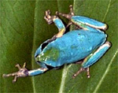
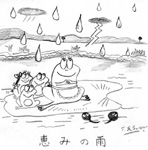

豊作を呼ぶチンゲンサイの青カエル！ 【静岡発いっちょう様】私は、浜松市でチンゲンサイという中国野菜をハウスで周年栽培をしている中年おやじなんですが、今日の午前中にチンゲンサイの葉っぱの上に、私が今まで見たこと無いような水色の雨蛙を見つけました(O.O;)(oo;)この種類の蛙はカメレオンみたいに時間が経過すると、周囲の色に同化し皮膚の色が変わっていくというのは知っておりましたが、周りに水色のものは一切ないので、大変不思議に思いまして、インターネットで「雨蛙」と検索しましたところ、大王様さんがヒットしましたので、写真を投稿いたしました。 なお、ゴライアスカエルの出展興行などで知られる『太陽系最大規模／超水族館』（すげーでしょ！！自らそう名乗ってます）三重県の鳥羽水族館に問い合わせたところ、次のような親切な回答が！。さすがです。 『ちょくちょく発見されていますが、少し珍しいものになります。突然変異と言いましょうか、他の魚でも黄色っぽい体になる黄化個体なども観られます。カエルはご指摘のように色が変わり保護色（カモフラージュ）で体を守りますが、青色では敵に見つかりやすいので普段は変わらないはずです。原因はカエルの体には黒、黄色、青の色素（色のもと）がありますが、この個体は黄色の色素がが無く自分は緑色になっているつもりなんです。ただ、この個体も茶色に変色は出来ます』 【全国かえる奉賛会】そうなんだああ。水色カエルの存在は、7月4日などでも紹介しているように最近、非カエル系新聞でもときたま報道されているのだが。チンゲンサイの上に出現したということは、もーチンゲンサイの大豊作は約束されたようなものである。 青色カエルは、瑞兆です。いっちょう様のハウスは、チンゲンサイがびっしりと生えてくるでありましょう。
でも『自分では緑色になっているつもり』てえのが可愛いですよねー。ということなので、今後は、彼を発見しても『あああーチンゲンサイの葉っぱと区別ができないくらいに緑色のカエルがいるぞおおおおおっ！』といって安心させてあげましょう。

筑紫野交通安全協会の全小学１年生にカエルセットを発送！【全国かえる奉賛会】小学生を子にもつ母親３人に、この『筑紫野市無事カエル』のランドセルカバーセットを先着３人にプレゼントします。と呼び掛けたところ、多数の応募をありがとうございました。惜しくも逃した人は、またの機会を作ろうとおもっているんで、カエル新聞をお見逃しなきよう！ プレゼントが到着したら、さっそく、わが子に、装着する姿をデジカメや通常カメラでレポートしてくれーーーっ。 レポートはこちらに！大王様へのメールwakuro-3@hf.rim.or.jp  すすむてつろう様がカエル暑中見舞い！【薩摩発すすむてつろう様】げこげこ大王様。お元気ですか。 お身体に気をつけられて頑張って下さいませ。カエルのイラストが出来たので送ります。【全国かえる奉賛会】鹿児島が生んだ偉大なコラージュ漫画家すすむてつろう様から、カエルなイラスト暑中見舞いをいただきました。英国の漫画関連団体の構成員である、すすむさんの作品は、大王も大好きなんだよねーっ。
投稿採用者に武功カエル徽章を授与！ |


かえる古新聞過去に取り上げた記事を見出し付きで一覧したい人は、ここをクリック◆創刊号を見る◆先週号を見る◆話題の号を見る◆かえる新聞の昔を読む
|
私も入っています。。全国かえる奉賛会
大王様に会うには、このバナーをクリック。ずっと奥に写真館があるぞ。全国かえる奉賛会に入会するには、自分のホームページのどこかに、下の部分を追加するとバナーがリンク付きで表示されるぞ。どんどん入会しましょー |


|